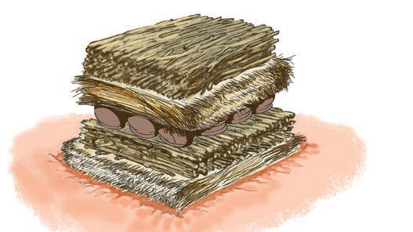

Activity 3
Search for videos on online sources that show the way of glazing clay objects, then do the following:
(a)Observe how to glaze various objects;
(b)Write down the methods used in glazing; and
(c)Present your work to the class under the guidance of the teacher for further discussion.